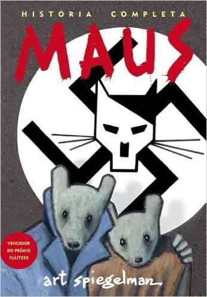
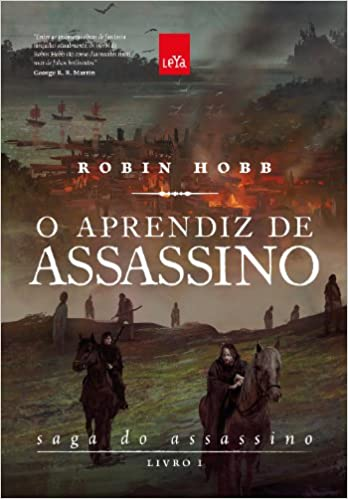

Você já se perguntou o que é
necessário para aprender inglês?
 Muita gente começa a ler a série Harry Potter justamente para melhorar o inglês, isso se dá pela linguagem ainda juvenil utilizada pela autora J.K Rowling. A série conta a história do meio bruxo Harry Potter que entra para a escola de mágia de Hogwarts e tem de enfrentar o temido Voldemort. Existem 7 livros, então da pra escolher.
Muita gente começa a ler a série Harry Potter justamente para melhorar o inglês, isso se dá pela linguagem ainda juvenil utilizada pela autora J.K Rowling. A série conta a história do meio bruxo Harry Potter que entra para a escola de mágia de Hogwarts e tem de enfrentar o temido Voldemort. Existem 7 livros, então da pra escolher.
Maus, é uma história escrita por um judeu polonês que sobreviveu ao campo de concentração de Auschwitz chamado Vladek Spiegelman. A história é uma representada em quadrinhos narrada para o próprio filho Art. É uma boa escolha para começar a ler em inglês.
 O pequeno principe, escrito pelo aviador, escritor e ilustrador francês Antoine de Saint-Exupéry. É um livro simples e bonito, que é uma boa escolha para ler em inglês no início.
O pequeno principe, escrito pelo aviador, escritor e ilustrador francês Antoine de Saint-Exupéry. É um livro simples e bonito, que é uma boa escolha para ler em inglês no início.
Aprendiz de assassino O livro é contado pelo protagonista Fitz. Fitz é um menino que, quando completou seis anos, seu avô o levou para a cavalaria de seu pai, príncipe do reino. O menino é entregue ao dono do estábulo, Bronco, para ser treinado. O Rei Sagaz, pai da Cavalaria, decide usar o menino como seu assassino. Como não tem muita escolha a não ser servir de joguete político, o protagonista aceita ser treinado por Breu, o assassino sênior sob o comando de Sagaz.